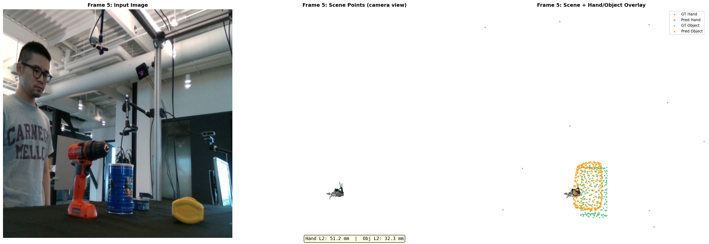
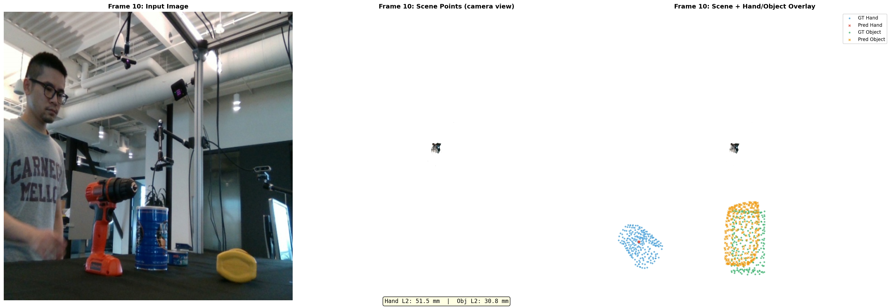
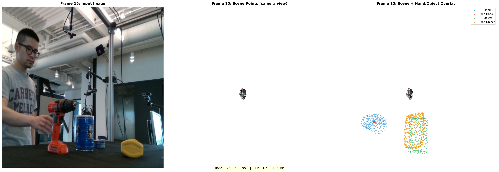

Frame 0: Input | Scene RGB points | Overlay (Hand L2: 13.4mm, Obj L2: 20.4mm)
world_points[h,w] maps to pixel (h,w) colors. Fourier encoding achieves hand L2 avg 16.9mm vs GPS 51.5mm after 200 overfit steps.
| Component | Details |
|---|---|
| Architecture | STream3R encoder (frozen) + decoder (optimized) + DCFBranch |
| Training steps | 200 overfit steps per run |
| Dataset | DexYCB — 20200709-subject-01/20200709_141754, 4 frames |
| Visualization | 3-panel per frame: Input Image | Scene Points RGB | Scene + Hand/Object Overlay |
| Scene points color | RGB from pixels via STream3R world_points[h,w] → pixel(h,w) |
| GT Hand | Blue markers |
| Pred Hand | Red markers |
| GT Object | Green markers |
| Pred Object | Orange markers |
Fourier positional encoding over 3D scene points. Trained with dcf_stream3r_v2_overfit config.
| Frame | Hand L2 (mm) | Object L2 (mm) |
|---|---|---|
| 0 | 13.4 | 20.4 |
| 1 | 13.2 | 20.4 |
| 2 | 26.1 | 22.0 |
| 3 | 14.9 | 21.3 |
| Avg | 16.9 | 21.0 |
Frame 0: Input | Scene RGB points | Overlay (Hand L2: 13.4mm, Obj L2: 20.4mm)

Frame 1: Input | Scene RGB points | Overlay (Hand L2: 13.2mm, Obj L2: 20.4mm)

Frame 2: Input | Scene RGB points | Overlay (Hand L2: 26.1mm, Obj L2: 22.0mm)

Frame 3: Input | Scene RGB points | Overlay (Hand L2: 14.9mm, Obj L2: 21.3mm)

All 4 frames comparison — Fourier encoding
GPS-style encoding using MLP distilled from MANO surface geometry. Trained with dcf_gps_overfit config.
| Frame | Hand L2 (mm) | Object L2 (mm) |
|---|---|---|
| 0 | 51.2 | 32.3 |
| 1 | 51.2 | 32.3 |
| 2 | 51.5 | 30.8 |
| 3 | 52.1 | 31.6 |
| Avg | 51.5 | 31.8 |

Frame 0: Input | Scene RGB points | Overlay (Hand L2: 51.2mm, Obj L2: 32.3mm)

Frame 1: Input | Scene RGB points | Overlay (Hand L2: 51.2mm, Obj L2: 32.3mm)

Frame 2: Input | Scene RGB points | Overlay (Hand L2: 51.5mm, Obj L2: 30.8mm)

Frame 3: Input | Scene RGB points | Overlay (Hand L2: 52.1mm, Obj L2: 31.6mm)

All 4 frames comparison — GPS encoding
| Encoding | Hand L1 final | Obj L1 final | Hand L2 avg (mm) | Obj L2 avg (mm) |
|---|---|---|---|---|
| Fourier (DCFPointEncoder) | 0.0085 | 0.0091 | 16.9 | 20.8 |
| GPS (MANOGPSField) | 0.0256 | 0.0122 | 51.5 | 31.8 |
PASS Camera-view RGB rendering shows scene structure clearly — the STream3R world_points[h,w] → pixel(h,w) mapping produces clean, photo-realistic point cloud renders.
FINDING Fourier encoding (DCFPointEncoder) converges significantly faster than GPS for 200-step overfit: hand L2 16.9mm vs 51.5mm.
FINDING GPS hand loss plateaus around 0.25 for ~60 steps before breaking through, suggesting the GPS field representation creates an optimization barrier early in training.
FIX Coordinate alignment confirmed — scene points and hand/object keypoints overlap correctly in camera view, validating the camera-space supervision pipeline introduced in Phase 1a.
| Priority | Task |
|---|---|
| P0 | Improve GPS distillation — reduce validation loss below 100 for reliable surface field approximation |
| P0 | NLF-style barycentric surface sampling + MANO LBS supervision for contact-aware trajectory fields |
| P1 | Multi-frame generalization test: train on 4 frames, eval on held-out frames from same sequence |
| P1 | Train GPS encoding for 1000+ steps — may close the gap with Fourier at larger step counts |
Published 2026-04-14 · Branch: feat/dcf · Logs: dcf_stream3r_v2_overfit, dcf_gps_overfit